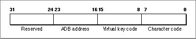
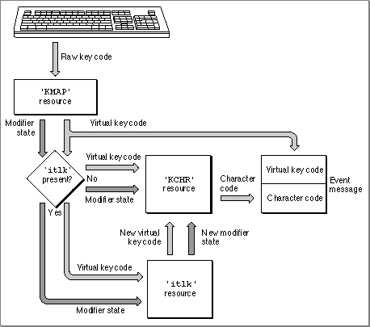
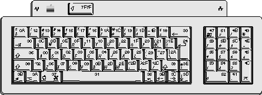
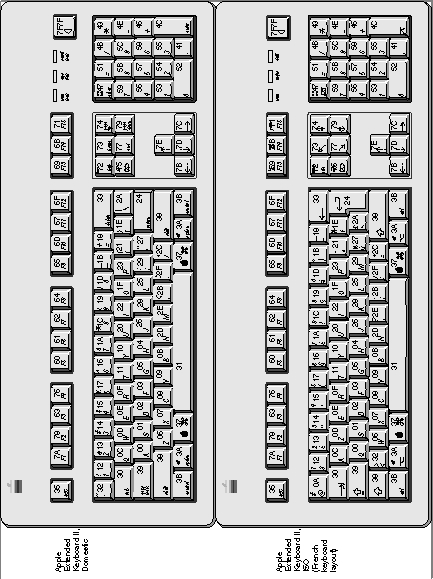
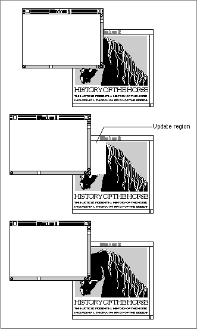
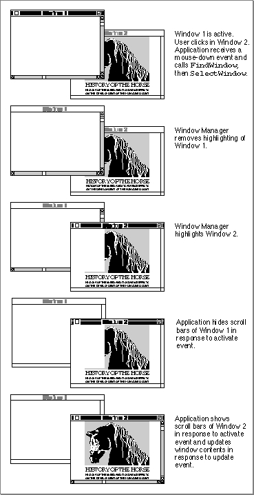

Handling Low-Level Events
Low-level events include hardware-related occurrences stored in the Operating System event queue and activate and update events generated by the Window Manager. When your application receives a low-level event, your application needs to determine the type of event and respond appropriately. The following sections discuss how to respond to mouse events, keyboard events (including certain specific keyboard events, such as when the user presses the Command key and period key at the same time), update events, activate events, disk-inserted events, and null events.Responding to Mouse Events
Whenever the user presses or releases the mouse button, the Operating System Event Manager records the action in the Operating System event queue. These actions are stored in the event queue as mouse-down and mouse-up events. Your application can retrieve these events using theWaitNextEventfunction.Events related to movements of the mouse are not stored in the event queue. The mouse driver automatically tracks the mouse and displays the cursor as the user moves the mouse. Therefore, the Operating System Event Manager does not report an event if the user simply moves the mouse.
However, you can request that the Event Manager report mouse-moved events if the user moves the cursor out of a region that you specify to the
WaitNextEventfunction. For example, your application can use mouse-moved events in this way to change the shape of the cursor from an I-beam to an arrow when the user moves the cursor from a text area to the scroll bar of a window.The rest of this section describes how your application responds to mouse-down or mouse-up events. See "Responding to Mouse-Moved Events" beginning on page 2-62
for specific details on mouse-moved events.The user expects that pressing the mouse button correlates to particular actions in an application. Your application is responsible for providing feedback or performing any actions in response to the user. For example, if the user presses the mouse button while the cursor is in the menu bar, your application should use the Menu Manager function
MenuSelectto allow the user to choose a menu command.Your application can receive and respond to mouse-down and mouse-up events. Most applications respond to mouse-down events and use the routines of various managers (such as
MenuSelect,DragWindow,TEClick,TrackBox,TrackGoAway, andTrackControl) to handle the corresponding mouse-up events. You can also provide code to respond to mouse-up events if it's appropriate for your application. For example, if your application implements its own text-editing capabilities, you might let the user select lines of text by dragging the mouse and use mouse-up events to signal the end of the selection.In System 7, your application receives mouse-down events only when it is the foreground process and the user clicks in the menu bar, in a window belonging to your application, or in a window belonging to a desk accessory that was launched in your application's partition. If the user clicks in a window belonging to another application, the Event Manager sends your application a suspend event and performs a major switch to the other application.
When your application receives a mouse-down event, you need to first determine the location of the cursor at the time the mouse button was pressed (the mouse location) and respond appropriately. You can use the Window Manager function
FindWindowto find which of your application's windows, if any, the mouse button was pressed in and, if applicable, to find which part of the window it was pressed in. TheFindWindowfunction also reports whether the given mouse location is in the menu bar or, in some cases, in a window belonging to a desk accessory (if the desk accessory was launched in your application's partition).The
whatfield of the event record for a mouse event contains themouseDownormouseUpconstant to report that the mouse button was pressed or released. Themessagefield is undefined. Thewhenfield contains the number of ticks since the system last started up. You can use thewhenfield to compare how much time has elapsed between successive mouse events; for example, you might use this information to help detect mouse double clicks.The
wherefield of the event record contains the location of the cursor at the time the mouse button was pressed or released. You can pass this location to theFindWindowfunction; theFindWindowfunction maps the given mouse location to particular areas
of the screen.The
modifiersfield contains information about the state of the modifier keys at the time the mouse button was pressed or released. Your application can perform different actions based on the state of the modifier keys. For example, your application might let the user extend a selection or select multiple objects at a time if the Shift key was down at the time of the mouse-down event.Listing 2-5 shows code that handles mouse-down events. The
DoMouseDownprocedure is an application-defined procedure that is called from theDoEventprocedure.
(Listing 2-3 on page 2-26 shows theDoEventprocedure.)Listing 2-5 Handling mouse-down events
PROCEDURE DoMouseDown (event: EventRecord); VAR part: Integer; thisWindow: WindowPtr; BEGIN {map location of the cursor (at the time of mouse-down event) } { to general areas of the screen} part := FindWindow(event.where, thisWindow); CASE part OF {take action based on the mouse location} inMenuBar: {mouse down in menu bar, respond appropriately} BEGIN {first adjust marks and enabled state of menu items} MyAdjustMenus; {let user choose a menu command} DoMenuCommand(MenuSelect(event.where)); END; inSysWindow: {cursor in a window belonging to a desk accessory} SystemClick(event, thisWindow); inContent: {mouse down occurred in the content area of } { one of your application's windows} IF thisWindow <> FrontWindow THEN BEGIN {mouse down occurred in a window other than the front } { window---make the window clicked in the front window, } { unless the front window is movable modal} IF MyIsMovableModal(FrontWindow) THEN SysBeep(30) ELSE SelectWindow(thisWindow); END ELSE {mouse down was in the content area of front window} DoContentClick(thisWindow, event); inDrag: {handle mouse down in drag area} IF (thisWindow <> FrontWindow) AND (MyIsMovableModal(FrontWindow)) THEN SysBeep(30) ELSE DragWindow(thisWindow, event.where, GetGrayRgn^^.rgnBBox); inGrow: {handle mouse down in grow region} DoGrowWindow(thisWindow, event); inGoAway: {handle mouse down in go-away region} IF TrackGoAway(thisWindow, event.where) THEN DoCloseCmd; inZoomIn, inZoomOut: {handle mouse down in zoom box region} IF TrackBox(thisWindow, event.where, part) THEN DoZoomWindow(thisWindow, part); END; {end of CASE} END;{of DoMouseDown}When your application retrieves a mouse-down event, call the Window Manager functionFindWindowto map the location of the cursor to particular areas of the screen. Given a mouse location, theFindWindowfunction returns as its function result a value that indicates whether the mouse location is in the menu bar, in one of your application's windows, or, in some cases, in a desk accessory window. If the mouse location is in an application window, the function result indicates which part of the window the mouse location is in. You can test the function result ofFindWindowagainst these constants to determine the mouse location at the time of the mouse-down event:CONST inDesk = 0;{none of the following} inMenuBar = 1;{in the menu bar} inSysWindow = 2;{in a desk accessory window} inContent = 3;{anywhere in content region except the } { grow region if the window is active, } { anywhere in content region including the } { grow region if the window is inactive} inDrag = 4;{in drag (title bar) region} inGrow = 5;{in grow region (active window only)} inGoAway = 6;{in go-away region (active window only)} inZoomIn = 7;{in zoom-in region (active window only)} inZoomOut = 8;{in zoom-out region (active window only)}TheFindWindowfunction reports theinDeskconstant if the mouse location is not in the menu bar, desk accessory window, or any window of your application. For example, theFindWindowfunction may report this constant if the location of the cursor is inside a window frame but not in the drag region or go-away region of the window; your application seldom receives theinDeskconstant.If
FindWindowreturns theinMenuBarconstant, the mouse location is in the menu bar. In this case your application should first adjust its menus. The application-definedMyAdjustMenusprocedure adjusts its menus--enabling and disabling items and setting marks--based on the context of the active window. For example, if the active window is a document window that contains a selection, your application should enable the Cut and Copy commands in the Edit menu, add marks to the appropriate items in the Font, Size, and Style menus, and adjust any other menu items accordingly. After adjusting your application's menus, call the Menu Manager functionMenuSelect, passing it the location of the mouse, to allow the user to choose a menu command. TheMenuSelectfunction handles all user interaction until the user releases the mouse button. TheMenuSelectfunction returns as its function result a long integer indicating the menu selection made by the user. As shown in Listing 2-5 on page 2-34, theDoMouseDownroutine calls an application-defined routine,DoMenuCommand, to perform the menu command selected by the user. See the chapter "Menu Manager" in this book for a listing that gives the code for theMyAdjustMenusandDoMenuCommandroutines and for more information about responding to specific menu commands.In System 7, the
FindWindowfunction seldom returns theinSysWindowconstant. TheFindWindowfunction returns this constant only when a mouse-down event occurred
in a desk accessory that was launched in the application's partition. Normally, if the
user clicks in a desk accessory's window, the Event Manager sends your application a suspend event and brings the desk accessory to the foreground. From that point on, mouse-down events and other events are handled by the desk accessory until the user again clicks in one of your application's windows.If
FindWindowdoes return theinSysWindowconstant, the mouse location is in a window belonging to a desk accessory that was launched in your application's
partition. In this case, your application should call theSystemClickprocedure. TheSystemClickprocedure routes the event to the desk accessory as appropriate. If the mouse button was pressed while the cursor was in the content region of the desk accessory's window and the window is inactive,SystemClickmakes it the active window. It does this by sending your application an activate event to deactivate its front window and directing an event to the desk accessory to activate its window.
FindWindowcan return any of the constantsinContent,inDrag,inGrow,inGoAway,inZoomIn, orinZoomOutif the given mouse location is in your application's active window. If the cursor is in the content area, your application should perform any actions appropriate to your application. Note that scroll bars are part of the content region. In most cases, if the cursor is in the content area, your application first needs to determine whether the mouse location is in the scroll bar or any other controls and then respond appropriately. TheDoMouseDownprocedure calls the application-defined procedureDoContentClickto handle mouse-down events in the content area of the active window. If your application needs to determine whether the mouse-down event caused a foreground switch (and you set thegetFrontClicksflag in your application's'SIZE'resource), yourDoContentClickprocedure can test bit 0 in themodifiersfield of the event record (normally your application does not test for this condition).
See the chapter "Control Manager" in this book for an exampleDoContentClickprocedure and for detailed information on implementing controls in your
application's windows.If the mouse location is in any of the other specified regions of an active application window, your application should perform the action corresponding to that region.
For example, if the cursor is in the drag region, your application should call the
Window Manager procedureDragWindowto allow the user to drag the window to
a new location.If the mouse location is in an inactive application window,
FindWindowcan return theinContentorinDragconstant, but does not distinguish between any other areas of the window. In this case, ifFindWindowreports theinContentconstant, your application should bring the inactive window to the front using theSelectWindowprocedure (unless the active window is a movable modal dialog box). If the active window is a movable modal dialog box, then your application should use theSysBeepprocedure to play the system alert sound rather than activating the selected window. Also, if your application interprets the first mouse click in an inactive window as a request to activate the window and perform an action, you can process the event again. However, note that most users expect the first click in an inactive window to activate
the window without performing any additional action. IfFindWindowreportsinDragfor an inactive application window, your application should call theDragWindowprocedure to allow the user to drag the window to a new location (unless the active window is a movable modal dialog box, in which case your application should simply play the system alert sound).If you're using TextEdit to handle text editing and call
TEClick,TEClickautomatically interprets mouse double clicks appropriately, including allowing the user to select a word by double-clicking it. Your application must provide the means to allow double- clicking in this manner in all other contexts.You can detect mouse double clicks by comparing the time and location of a mouse-up event with that of the immediately following mouse-down event. The
GetDblTimefunction returns the recommended difference in ticks that should exist between the occurrence of a mouse-up and mouse-down event for those two mouse events to be considered a double click.You should interpret mouse events as a double click if both of these conditions are true:
The Event Manager also provides other routines that give information about the mouse. You can find the current mouse location using the
- The times of the mouse-up event and mouse-down event differ by a number of ticks less than or equal to the value returned by the
GetDblTimefunction.- The locations of the two mouse-down events separated by the mouse-up event are sufficiently close to each other. How you determine this value depends on your application and the context in which the mouse-down events occurred. For example, in a word-processing application, you might consider two mouse-down events a double click if the mouse locations both mapped to the same character, whereas in a graphics application you might consider it a double click if the sum of the horizontal and vertical difference between the two mouse locations is no more than five pixels.
GetMouseprocedure. You can determine the current state of the mouse button using theButton,StillDown, andWaitMouseUpfunctions. See "Reading the Mouse" beginning on page 2-108 for detailed information on these routines.Responding to Keyboard Events
Your application can receive keyboard events to notify you when the user has pressed
or released a key or continued to hold down a key. When the user presses a key, the Operating System Event Manager stores a key-down event in the Operating System event queue. Your application can retrieve the event from the queue; determine which key was pressed; determine which modifier keys, if any, were pressed at the time of the event; and respond appropriately. Typically, your application provides feedback by echoing (displaying) the glyph representing the character generated by the pressed key on the screen.When the user holds down a key for a certain amount of time, the Event Manager generates auto-key events. The Event Manager generates an auto-key event after a certain initial delay (the auto-key threshold) has elapsed since the original key-down event. The Event Manager generates subsequent auto-key events whenever a certain repeat interval (the auto-key rate) has elapsed since the last auto-key event and while
the original key is still held down. The user can set the initial delay and rate of repetition using the Keyboard control panel. The default value for the auto-key threshold is
16 ticks, and the default value for the auto-key rate is 4 ticks. Current values of the auto- key threshold and auto-key rate are stored in the system global variablesKeyThreshandKeyRepThresh.In addition to getting keyboard events when the user presses or releases a key, you can directly read the keyboard (and keypad) using the
GetKeysprocedure.When the user presses a key or a combination of keys, your application should respond appropriately. Your application should follow the guidelines in Macintosh Human Interface Guidelines for consistent use of and response to keyboard events. For example, your application should allow the user to choose a frequently used menu command by using a keyboard equivalent for that menu command--usually a combination of the Command key and another key. Your application should also respond to the user pressing the arrow keys, Shift key, or other keys according to the guidelines provided
in Macintosh Human Interface Guidelines.Also note that certain keyboards have different physical layouts or contain additional keys, such as function keys. If your application supports function keys or other special keys, you should follow the guidelines in Macintosh Human Interface Guidelines when determining what action to take when the user presses one of these keys.
Certain keystroke combinations are handled by the Event Manager and not returned to your application. If the user holds down the Command and Shift keys while pressing a numeric key to produce a special effect, that special effect occurs. Apple provides three standard Command-Shift-number key sequences. The standard Command-Shift- number key sequences are 1 for ejecting the disk in the internal drive, 2 for ejecting the disk in a second internal drive or for ejecting the disk in an external drive if the computer has only one internal drive, and 3 for taking a snapshot of the screen and storing it as a TeachText document on the startup volume.
The action corresponding to a Command-Shift-number key sequence is implemented
as a routine that takes no parameters and is stored in an 'FKEY' resource with a resource ID that corresponds to the number that activates it. Apple reserves 'FKEY' resources
with resource IDs 1 through 4 for its own use; if you provide an 'FKEY' resource, use a resource ID between 5 and 9.You can disable the Event Manager's processing of Command-Shift-number key sequences for numbers 3 through 9 by setting the system global variable
ScrDmpEnb
(a byte) to 0. However, in most cases you should not disable the Event Manager's processing of these events.The
whatfield of the event record for a keyboard-related event contains either thekeyDownorkeyUpconstant to indicate that the key was pressed or released, or theautokeyconstant to indicate that the key is being held down.The Event Manager sets the system event mask of your application to accept all events except key-up events. Most applications ignore key-up events. If your application needs to receive key-up events, you can change the system event mask of your application using the Operating System Event Manager procedure
SetEventMask.In the low-order word the
messagefield contains the character code and virtual key code that corresponds to the key pressed by the user.The virtual key code represents the key pressed or released by the user; this value is always the same for a specific physical key on a particular keyboard. For example, on
the Apple Keyboard II, ISO layout, the virtual key code for the fifth key to the right
of the Tab key (the key labeled "T" ) is always $11, regardless of which modifier keys
are also pressed.To determine the virtual key code that corresponds to a specific physical key, system software uses a hardware-specific key-map (
'KMAP') resource that specifies the virtual key codes for a particular keyboard. After determining the virtual key code of the key pressed by the user, system software uses a script-specific keyboard-layout ('KCHR') resource to map a virtual key code to a specific character code. Any given script system has one or more'KCHR'resources. For example, a particular computer might contain the French'KCHR'resource in addition to the standard U.S.'KCHR'resource. In this situation, the current'KCHR'resource determines whether virtual key codes are mapped to the French or U.S. character set.The character code represents a particular character. The character code that is generated depends on the virtual key code, the state of the modifier keys, and the current
'KCHR'resource. For example, the U.S.'KCHR'resource specifies that for the virtual key code $2D (the fifth key to the left of the Shift key and labeled "N" on an Apple Keyboard II, Domestic layout), the character code is $6E when no modifier keys are pressed; the character code is $4E when this key is pressed in combination with the Shift key. Character codes for the Roman script system are specified in the extended version of ASCII (the American Standard Code for Information Interchange).The
messagefield contains additional information for ADB keyboards. The low-order byte of the high-order word contains the ADB address of the keyboard where the keyboard event occurred. Figure 2-7 shows the structure of themessagefield of the event record for keyboard events.Figure 2-7 The
messagefield of the event record for keyboard events
Usually your application uses the character code, rather than the virtual key code, when responding to keyboard events. You can use these two constants to access the virtual key code and character code in the
messagefield:CONST charCodeMask = $000000FF;{mask for character code} keyCodeMask = $0000FF00;{mask for virtual key code}Thewhenfield contains the number of ticks since the system last started up. You can
use thewhenfield to compare how much time has expired between successive
keyboard events.The
wherefield of the event record contains the location of the cursor at the time the key was pressed or released. You typically disregard the mouse location when processing keyboard events.The
modifiersfield contains information about the state of the modifier keys at the time the key was pressed or released. Your application can perform different actions based on the state of the modifier keys. For example, your application might perform an action associated with a corresponding menu command if the Command key was down at the time of the key-down event.System software can support a number of different types of keyboards, for example, the Apple Keyboard II, the Apple Extended keyboards, or other keyboards. The system software uses various keyboard resources and international resources to manage different types of keyboards. Figure 2-8 illustrates how system software maps keys to character codes.
Figure 2-8 Keyboard translation

When a user presses or releases a key on the keyboard, the keyboard generates a raw
key code. The system software uses a 'KMAP' resource to map the raw key code to a hardware-independent virtual key code and to set bits indicating the state of the modifier keys. A 'KMAP' resource specifies the physical arrangement of a particular keyboard and indicates the virtual key codes that correspond to each physical key.If the optional key-remap ('
itlk') resource is present, the system software remaps the virtual key codes and modifier state for some key combinations on certain keyboards before using the 'KCHR' resource. The 'itlk' resource can reintroduce hardware dependence because certain scripts, languages, and regions need subtle differences in layout for specific keyboards. If present, the 'itlk' resource affects only a few keys.After mapping the virtual key code and the state of the modifier keys through an optional '
itlk' resource, the system software uses a 'KCHR' resource to produce the character code representing the key that was pressed or released. The 'KCHR' resource specifies how to map the setting of the modifier keys and a virtual key code to a character code.After mapping the key, the Event Manager returns the virtual key code and the character code in the
messagefield of the event record.Figure 2-9 shows the virtual key codes as specified by the
'KMAP'resource for the Apple Keyboard II, ISO layout. The labels for the keys on the keyboard are shown using the U.S. keyboard layout. The virtual key codes are shown in hexadecimal.Figure 2-9 Virtual key codes for the Apple Keyboard II, ISO layout

Figure 2-10 shows the virtual key codes as specified by the
'KMAP'resource for the Apple Extended Keyboard II, one that uses the Domestic (ANSI) layout, and one that uses the ISO layout. The labels for the keys on the ISO keyboard are shown using the French keyboard layout. The virtual key codes are shown in hexadecimal.If a user of an Apple Extended Keyboard II (using the U.S.
'KCHR' resource) presses the key labeled "C" and no modifier keys, the system software maps this through the 'KMAP' and 'KCHR' resources to produce a virtual key code of $08 and the character code $63 (the character "c") in themessagefield of the event record. If the user presses the key labeled "C" and the Option key, then the system software maps this to virtual key code $08 and the character code $8D (the character "ç") in themessagefield.As another example, if a user of an Apple Extended Keyboard II, Domestic layout, is using the U.S.
'KCHR' resource and presses the key labeled "M" the system software maps this through the'KMAP' and'KCHR' resources to produce a virtual key code of $2E and the character code $6D (the character "m") in themessagefield of the event record.If a user of an Apple Extended Keyboard II, ISO layout, is using the French
'KCHR' resource and presses the key labeled "M" the system software maps this through the'KMAP' and'KCHR' resources to produce a virtual key code of $29 and the character
code $6D (the character "m") in themessagefield of the event record.See Inside Macintosh: Text for additional information about the keyboard resources and how the Script Manager manages various scripts.
Figure 2-10 Virtual key codes for the Apple Extended Keyboard II

Listing 2-6 shows code that handles key-down and auto-key events. The
DoKeyDownprocedure is an application-defined procedure that is called from theDoEventprocedure. (Listing 2-3 on page 2-26 shows theDoEventprocedure.)Listing 2-6 Handling key-down and auto-key events
PROCEDURE DoKeyDown (event: EventRecord); VAR key: Char; BEGIN key := CHR(BAnd(event.message, charCodeMask)); IF BAnd(event.modifiers, cmdKey) <> 0 THEN BEGIN {Command key down} IF event.what = keyDown THEN BEGIN {first enable/disable/check menu items as needed-- } { the MyAdjustMenus procedure adjusts the menus } { as appropriate for the current window} MyAdjustMenus; DoMenuCommand(MenuKey(key)); {handle the menu command} END; END ELSE MyHandleKeyDown(event); END;TheDoKeyDownprocedure in Listing 2-6 first extracts the character code of the key pressed from themessagefield of the event record. It then checks themodifiersfield of the event record to determine if the Command key was pressed at the time of the event. If so, and if the event is a key-down event, the code calls the application-defined procedureMyAdjustMenus, and then calls another application-defined routine,DoMenuCommand, to perform the menu command associated with that key. (TheMyAdjustMenusprocedure adjusts the menus appropriately, and according to whether the current window is a document window or modeless dialog box. See the chapter "Menu Manager" in this book for code that defines theMyAdjustMenusprocedure.) Otherwise, the code calls the application-defined procedureMyHandleKeyDownto handle the event.Listing 2-7 shows the application-defined routine
MyHandleKeyDown.Listing 2-7 Handling key-down events
PROCEDURE MyHandleKeyDown (event: EventRecord); VAR key: Char; window: WindowPtr; myData: MyDocRecHnd; te: TEHandle; windowType: Integer; BEGIN window := FrontWindow; {determine the type of window--document, modeless, etc.} windowType := MyGetWindowType(window); IF windowType = kMyDocWindow THEN BEGIN key := CHR(BAnd(event.message, charCodeMask)); IF window <> NIL THEN BEGIN IF key = char(kTab) THEN {handle special characters} MyDoTab(event) ELSE BEGIN myData := MyDocRecHnd(GetWRefCon(window)); te := myData^^.editRec; IF (te^^.teLength - (te^^.selEnd - te^^.selStart) + 1 < kMaxTELength) THEN BEGIN TEKey(key, te); {insert character in document} MyAdjustScrollBars(window, FALSE); MyAdjustTE(window); myData^^.windowDirty := TRUE; END; END; END; END ELSE MyHandleKeyDownInModeless(event, windowType); END;TheMyHandleKeyDownprocedure in Listing 2-7 handles key-down events in any window of the application. For document windows, the code inserts the character represented by the key pressed by the user into the active document. It first finds the active document using theFrontWindowfunction, then handles the event as appropriate for the document window. For example, it treats the Tab key as a special character and calls an application-defined routine,MyDoTab, to handle this character appropriately for the document. For all other keys directed to the document window, the code gets the edit record associated with the document, and then it simply inserts the character into the document, using the TextEditTEKeyprocedure. It also calls two other application-defined routines,MyAdjustScrollBarsandMyAdjustTE, to update the document and edit record.The
MyHandleKeyDownprocedure calls an application-defined routine, MyHandleKeyDownInModeless, to handle key-down events in modeless dialog boxes. See the chapter "Dialog Manager" in this book for more information on handling events in dialog boxes.Scanning for a Cancel Event
Your application should allow the user to cancel a lengthy operation by using the Command-period combination. Your application can implement this cancel operation by periodically examining the state of the keyboard using theGetKeysprocedure, or your application can scan the event queue for a keyboard event.Listing 2-8 shows an application-defined function that scans the event queue for any occurrence of a Command-period event.
The
UserDidCancelfunction in Listing 2-8 first checks to see if the user changed the script. The application maintains a global variable,gCurrentKeyScript, that keeps track of this information. The application also uses a global variable,gPeriodKeyCode, to hold the key code that maps to the period key according to the current script. If the current script has changed, theUserDidCancelfunction calls an application-defined routine,MySetPeriodKeyCode, to change the value of thegPeriodKeyCodeglobal variable as necessary.The
UserDidCancelfunction then determines whether A/UX is running. You must
use a different method to scan the event queue if A/UX is running. This code uses
an application-defined function calledMyCheckAUXEventQueueto search for a Command-period event if A/UX is running. Otherwise, the code checks thewhatfield for a key-down event. If it finds a key-down event, it then checks themessagefield
to determine whether the user pressed the period key and checks themodifiers
field to determine whether the user also pressed the Command key. If it finds the Command-period combination, it sets thefoundEventvariable toTRUEand returns this value. Otherwise, it looks at the next entry in the queue and continues to search the queue until it either finds a Command-period event or reaches the end of the queue.Listing 2-8 Scanning for a Command-period event
FUNCTION UserDidCancel: Boolean; VAR foundEvent: Boolean; eventQPtr: EvQElPtr; eventQHdr: QHdrPtr; keyCode: LongInt; isCmdKey: LongInt; BEGIN foundEvent := FALSE; {assume the event is not there} {Check to see if the script has changed} IF (gCurrentKeyScript <> GetEnvirons(smKeyScript)) THEN MySetPeriodKeyCode; {set gPeriodKeyCode to match new script} IF (GetAUXVersion > 0) THEN {if A/UX is running use this method} foundEvent := MyCheckAUXEventQueue(gPeriodKeyCode, cmdKey) ELSE BEGIN {scan event queue} eventQHdr := GetEvQHdr; {get the event queue header} eventQPtr := EvQElPtr(eventQHdr^.qHead); {get first entry} WHILE (eventQPtr <> NIL) AND (NOT(foundEvent)) DO BEGIN {look for key-down event} IF (eventQPtr^.evtQWhat = keyDown) THEN {found key-down event, } BEGIN { look for Command-period} keyCode := BAND(eventQPtr^.evtQMessage, keyCodeMask); keyCode := BSR(keyCode, 8); isCmdKey := BAND(eventQPtr^.evtQModifiers, cmdKey); IF isCmdKey <> 0 THEN {Command key was pressed} IF keyCode = gPeriodKeyCode THEN foundEvent := TRUE; {key pressed was '.'} END; {of found key-down} IF (NOT foundEvent) THEN {go to next entry} eventQPtr := EvQElPtr(eventQPtr^.qLink); END; {of while} END; {of scan event queue} UserDidCancel := foundEvent; {return result of search} END;Responding to Update Events
The Event Manager reports update events to your application whenever one of your
application's windows needs updating. Upon receiving an update event, your application should update the contents of the specified window. Your application can call the Window Manager procedureBeginUpdate, draw the window's contents, and then callEndUpdatewhen your application has finished updating the window's contents.Your application can also let the Window Manager automatically update the contents of a window by supplying in the window record a handle to a picture that contains the contents of the window. This technique is generally useful only for windows that contain static information that doesn't change or can't be edited. For example, if your application provides a window that always displays a picture of the earth, you can supply the handle to the picture, and the Window Manager automatically updates the window as needed, without sending your application an update event. In most cases, your application needs to perform the update itself.
The Window Manager maintains an update region for each window. The Window Manager keeps track of all areas in a window's content region that need to be redrawn and accumulates them in the window's update region. When an application calls
WaitNextEventorEventAvail(orGetNextEvent), the Event Manager checks to see if any windows have an update region that is not empty. If so, the Event Manager reports update events to the appropriate applications; any applications with windows that require updating receive the necessary update events according to the normal processing of events.If more than one window needs updating, the Event Manager issues update events for the frontmost window first. This means that updating of windows occurs in front-to-back order, which is what the user expects.
When one of your application's windows needs to be updated, the Window Manager calls the window definition function of that window, requesting that it draw the window frame. The Window Manager then generates an update event for that window. The Event Manager reports any update events for your application's windows to your application, and your application should update the window contents as necessary.
In response to an update event, your application should first call the
BeginUpdateprocedure. TheBeginUpdateprocedure temporarily replaces the visible region of the window's graphics port (that part of the window that is visible on the screen) with the intersection of the visible region and update region of the window. TheBeginUpdateprocedure then clears the update region of the window--preventing the update event for this occurrence from being reported again.After calling
BeginUpdate, your application should draw the window's contents, either entirely or in part. You can draw either the entire content region or only the area in the visible region. In either case, the Window Manager allows only what falls within the visible region to be drawn on the screen. (Because theBeginUpdateprocedure intersects the visible region with the update region, the visible region at this point corresponds to any visible parts of the old update region.)The
EndUpdateprocedure restores the normal visible region of the window's
graphics port.Figure 2-11 shows how an application updates its windows. In this example, Window 1 partially covers Window 2. When the user moves Window 1 so that more of Window 2 is exposed, the Window Manager requests the window definition function of the window to update the window frame, and accumulates the area requiring updating in the update region of the window.
When the application receives an update event for this window, the
messagefield of the event record contains a pointer to the window that needs updating. Your application can callBeginUpdate, draw the window's contents, and then callEndUpdate. This completes the handling of the update event.Your application can receive update events when it is in the foreground or in the background. In the example shown in Figure 2-11, Window 1 and Window 2 could belong to the same application or different applications. In either case, the Event Manager reports an update event to the application whose window contents
need updating.Figure 2-11 Responding to an update event for a window

Your application should respond to update events or at least call the
BeginUpdateprocedure in response to an update event. If you do not call theBeginUpdateprocedure, your application continues to receive update events for the window (until
the update region is empty). You should always make sure that you match a call toBeginUpdatewith a call toEndUpdate. By calling theBeginUpdateandEndUpdateprocedures, you indicate to the Window Manager that you have updated the window and handled the update event.Listing 2-9 shows an example of an application-defined routine that responds to
update events.Listing 2-9 Responding to update events
PROCEDURE DoUpdate (window: WindowPtr); VAR windowType: Integer; BEGIN {determine the type of window--document, modeless, etc.} windowType := MyGetWindowType(window); CASE windowType OF kMyDocWindow: BEGIN BeginUpdate(window); MyDrawWindow(window); EndUpdate(window); END; OTHERWISE DoUpdateMyDialog(window); END; {of CASE} END;TheDoUpdateprocedure in Listing 2-9 first determines if the window is a document window or a modeless dialog box. The MyGetWindowType function is an application-defined routine that returns the kMyDocWindow constant if the window is a document window and returns other application-defined constants if the window is a modeless dialog box.If the window is a document window, the procedure does all its drawing of the window within calls to the
BeginUpdateandEndUpdateprocedures. The application-defined routineMyDrawWindowperforms the actual updating of the document window contents. See the chapter "Window Manager" in this book for code that shows theMyGetWindowTypeandMyDrawWindowroutines.If the window is a modeless dialog box, the code calls the application-defined DoUpdateMyDialog procedure to update the contents of the dialog box. See the chapter "Dialog Manager" in this book for details on handling update events in dialog boxes.
Responding to Activate Events
When several windows belonging to your application are open, you should allow the user to switch from one window to another by clicking in the appropriate window. To implement this, whenever your application receives a mouse-down event, you should first determine whether the user clicked in another window by using the Window Manager functionFindWindow; if so, you can use the Window Manager procedureSelectWindowto generate the necessary activate events.Before returning to your application and before your application receives any events relating to this occurrence, the
SelectWindowprocedure does some work for you, such as removing the highlighting from the window to be deactivated and highlighting the newly activated window. At your application's next request for an event, the Event Manager returns an activate event.An activate event indicates the window involved and whether the window is being activated or deactivated. Your application should perform any other actions needed to complete the action of the window becoming active or inactive. For example, when a window becomes active, your application should show any scroll bars and restore selections as necessary.
Your application typically receives an activate event (with a flag that indicates the window should be deactivated) for the window being deactivated, followed by an activate event for the window becoming active.
Activate events are not placed into the Operating System event queue but are sent directly to the Event Manager.
Figure 2-12 on the next page shows two documents belonging to the same application, with Window 1 the active window. When the user clicks in Window 2, your application receives a mouse-down event and can use the
FindWindowfunction to determine whether the mouse location is in an inactive window. If so, your application should call theSelectWindowprocedure. TheSelectWindowprocedure removes highlighting
of Window 1, highlights Window 2, and generates activate events for both of these occurrences. The Event Manager reports the activate events one at a time to your application; in this example, the first activate event indicates that Window 1 should be deactivated. Your application should hide the scroll bars and remove the highlighting from any selections as necessary.The next activate event indicates that Window 2 should be activated. Your application should show the scroll bars and restore any selections as necessary. If the window needs updating as a result of being activated, the Event Manager sends your application an update event so that your application can update the window contents.
Your application also needs to activate or deactivate windows in response to suspend and resume events. If you set the
acceptSuspendResumeEventsflag and thedoesActivateOnFGSwitchflag in your application's'SIZE'resource, your application is responsible for activating or deactivating your application's
windows in response to handling suspend and resume events. If you set theacceptSuspendResumeEventsflag and do not set thedoesActivateOnFGSwitchflag, your application receives an activate event immediately following a suspend or resume event. In most cases, you should set both theacceptSuspendResumeEventsanddoesActivateOnFGSwitchflags in your application's'SIZE'resource.Figure 2-12 Responding to activate events for a window

The
whatfield of an event record for an activate event contains theactivateEvtconstant. Themessagefield contains a pointer to the window being activated or deactivated. Themodifiersfield contains additional information about the activate event, along with information about the state of the modifier keys at the time the event was posted. Your application can examine bit 0 of themodifiersfield of the event record to determine if the window should be activated or deactivated. Bit 0 of themodifiersfield is 1 if the window should be activated and 0 if the window should be deactivated. You can use theactiveFlagconstant to test the state of this bit in themodifiersfield.The
whenfield of the event record contains the number of ticks since the system last started up. Thewherefield of the event record contains the location of the cursor at the time the activate event occurred.Upon receiving an activate event that indicates the window is being deactivated, your application should hide any scroll bars and remove the highlighting from any selections as necessary.
Upon receiving an activate event that indicates the window is becoming active, your application should show any scroll bars, highlight any selections, and otherwise restore the window to the state it was in when it was last active. For example, your application should restore the insertion point to its previous position, and the document should be scrolled to the position in which the user last left it. Your application should also adjust its menus appropriately for the newly active window--adjusting the marks and enabled state of menu items based on the state of the active window.
Listing 2-10 shows an application-defined procedure that responds to activate events.
Listing 2-10 Responding to activate events
PROCEDURE DoActivate (window: windowPtr; activate: Boolean; event: EventRecord); VAR growRect: Rect; {window's grow rectangle} myData: MyDocRecHnd; {window's document record} windowType: Integer; BEGIN {determine the type of window--document, modeless, etc.} windowType := MyGetWindowType(window); CASE windowType OF kMyDocWindow: BEGIN myData := MyDocRecHnd(GetWRefCon(window)); HLock(Handle(myData)); WITH myData^^ DO IF activate THEN {window is being activated} BEGIN {restore any selections or display caret} MyRestoreSelection(window); {adjust menus as appropriate for this document window} MyAdjustMenus; {activate any scroll bars} vScrollBar^^.contrlVis := kControlVisible; hScrollBar^^.contrlVis := kControlVisible; {invalidate area of scroll bars to force update} InvalRect(vScrollBar^^.contrlRect); InvalRect(hScrollBar^^.contrlRect); {invalidate area of size box, if any} growRect := window^.portRect; WITH growRect DO BEGIN top := bottom - kScrollbarAdjust; left := right - kScrollbarAdjust; END; {end of WITH growRect statement} InvalRect(growRect); END ELSE {window is being deactivated} BEGIN {unhighlight selection (if any) or hide the caret} MyHideSelection; HideControl(vScrollBar); {hide any scroll bars} HideControl(hScrollBar); DrawGrowIcon(window); {change size box immediately} END; HUnLock(Handle(myData)); END; {end of kMyDocWindow} kMyGlobalChangesID: {this window is a modeless dialog box } { for this app's Global Changes command} MyDoActivateGlobalChangesDialog(window, event); {handle other modeless dialog boxes as appropriate} END; {of CASE} END;Listing 2-10 uses the application-defined functionMyGetWindowTypeto determine what type of window is involved with the activate event. If the window is a document window, theDoActivateprocedure uses theGetWRefConfunction to get a handle
to the window's document record. (TheDoActivateprocedure, and other application- defined routines, maintain information about the document associated with a window
in a document record; the application stores a handle to the document record as the window's reference constant value when it creates a new window. See the chapter "Window Manager" in this book for information on defining a document record.)If the document window should be activated, the code calls an application-defined routine,
MyRestoreSelection. Your application should restore any selection or display the caret as appropriate. For example, if your application uses TextEdit to display text in the content area of windows, you can call the TextEdit procedureTEActivateto restore any selection or display a caret at the insertion point. TheDoActivateprocedure then calls another application-defined procedure,MyAdjustMenus, to adjust the menus as appropriate for the document window. (See
the chapter "Menu Manager" for a listing of theMyAdjustMenusprocedure.) After restoring any selections and adjusting its menus, the code shows the scroll bars and size box of the window being activated. It does this by invalidating the area of the scroll bars and size box, accumulating these areas into the update region. This causes an update event to be generated. The application redraws its controls as appropriate in response to update events.If the document window should be deactivated, the code in Listing 2-10 unhighlights
the selection and hides the caret by calling the application-defined procedure MyHideSelection. The code then hides the scroll bars and size box of the
deactivated window.If the window associated with the activate event is a modeless dialog box, for example, a Global Changes modeless dialog box, the
DoActivateprocedure calls an application-defined procedure to activate or deactivate the dialog box as needed. See the "Dialog Manager" chapter in this book for information on handling activate events in modeless dialog boxes.Responding to Disk-Inserted Events
When your application uses the Standard File Package to allow the user to choose a file to open or choose a location for storing a file, the Standard File Package responds to disk-inserted events for your application while interacting with the user. In most cases, if your application receives an unexpected disk-inserted event, it can simply check to see if the disk was successfully mounted and use the Disk Initialization Manager functionDIBadMountto notify the user if the disk was not successfully mounted.When the user inserts a disk, the Operating System attempts to mount the volume on the disk by calling the File Manager function
PBMountVol. If the volume is successfully mounted, an icon representing the disk appears on the desktop. The Operating System Event Manager then generates a disk-inserted event. If the user is interacting with a standard file dialog box, the Standard File Package intercepts the disk-inserted event and handles it. Otherwise, the event is left in the event queue for your application to retrieve. The Desk Manager also intercepts and handles disk-inserted events if a desk accessory is in front.Usually your application should handle and not mask out disk-inserted events. The user might insert a disk at any time and expects to be warned if the disk is uninitialized or damaged. If your application receives a disk-inserted event and the volume was successfully mounted, your application usually does not need to take any further action. However, if the volume was not successfully mounted, then your application should give the user a chance to initialize or eject the uninitialized or damaged disk.
If you do mask out disk-inserted events, the event stays in the Operating System event queue until your application calls the Standard File Package or until an application that does handle disk-inserted events becomes the foreground process. This situation can be confusing to the user, so your application should handle disk-inserted events at the time that they occur.
If the volume was successfully mounted and your application either does not use the Standard File Package or prompts the user to insert a disk, then you can choose to respond to disk-inserted events in whatever way is appropriate for your application.
The Dialog Manager procedure
ModalDialogmasks out disk-inserted events. (The Standard File Package changes the mask in order to receive disk-inserted events.) If one of your application's modal dialog boxes needs to respond to disk-inserted events, then you can change the event mask from within the event filter function that you supply as one of the parameters toModalDialog. Otherwise, your application can respond to the disk-inserted event after the user dismisses the modal dialog box.The
whatfield of the event record contains thediskEvtconstant to indicate a disk-inserted event. Themessagefield contains the drive number in the low-order word and the result code from thePBMountVolfunction in the high-order word. Your application can examine the high-order word to determine if the attempt to mount the volume was successful. If the volume was not successfully mounted, your application can notify the user using the Disk Initialization Manager functionDIBadMount. If the volume was successfully mounted, your application can use the drive number returned in the low-order word for accessing the disk.Listing 2-11 shows a procedure that handles disk-inserted events. If the disk was not successfully mounted, the procedure notifies the user using the
DIBadMountfunction. Otherwise, it does not take any action. See the chapter "Disk Initialization Manager"
in Inside Macintosh: Files for information on the routines provided by the Disk Initialization Manager.Listing 2-11 Responding to disk-inserted events
PROCEDURE DoDiskEvent (event: EventRecord); VAR thisPoint: Point; myErr: OSErr; BEGIN IF HiWord(event.message) <> noErr THEN BEGIN {attempt to mount was unsuccessful} DILoad; {load Disk Initialization Manager} SetPt(thisPoint, 120, 120); {notify the user} myErr := DIBadMount(thisPoint, event.message); DIUnload; {unload Disk Initialization Manager} END ELSE {attempt to mount was successful} ; {record the drive number or do other processing} END;Responding to Null Events
When the Event Manager has no other events to report, it returns a null event. TheWaitNextEventfunction reports a null event by returning a function result ofFALSEand setting thewhatfield of the returned event record tonullEvt. (TheEventAvailandGetNextEventfunctions also return null events in this manner.)When your application receives a null event, it can perform idle processing. Your application should do minimum processing in response to a null event, so that other processes can use the CPU and so that the foreground process (or your application, if
it is in the foreground) can respond promptly to the user.For example, if your application receives a null event and it is in the foreground, it can make the caret blink in the active window.
If your application receives a null event in the background, it can perform tasks or do other processing while in the background. However, your application should not perform any tasks that would slow down the responsiveness of the foreground process. Your application also should not interact with the user if it is in the background.
If you don't want your application to receive null events when it is in the background, set the
cannotBackgroundflag in your application's'SIZE'resource.Listing 2-12 shows a procedure that performs idle processing in response to a null event. If the application is not in the background and the active window is a document window, this code calls the TextEdit procedure
TEIdle. TheTEIdleprocedure makes a blinking caret appear at the insertion point in the text referred to by the edit record. (This application uses TextEdit to display text in its document windows; if you don't use TextEdit for your document windows, provide your own routine to blink the caret.) If the active window is a modeless dialog box, theDoIdleprocedure calls the Dialog Manager functionDialogSelectto blink the caret in any editable text item of the dialog box.Listing 2-12 Handling null events
PROCEDURE DoIdle (event: EventRecord); VAR window: WindowPtr; myData: MyDocRecHnd; windowType: Integer; itemHit: Integer; result: Boolean; BEGIN window := FrontWindow; {determine the type of window--document, modeless, etc.} windowType := MyGetWindowType(window); CASE windowType OF kMyDocWindow: IF (NOT gInBackground) THEN BEGIN myData := MyDocRecHnd(GetWRefCon(window)); TEIdle(myData^^.editRec); END; kMyGlobalChangesID: result := DialogSelect(event, window, itemHit); END; {of CASE} END;